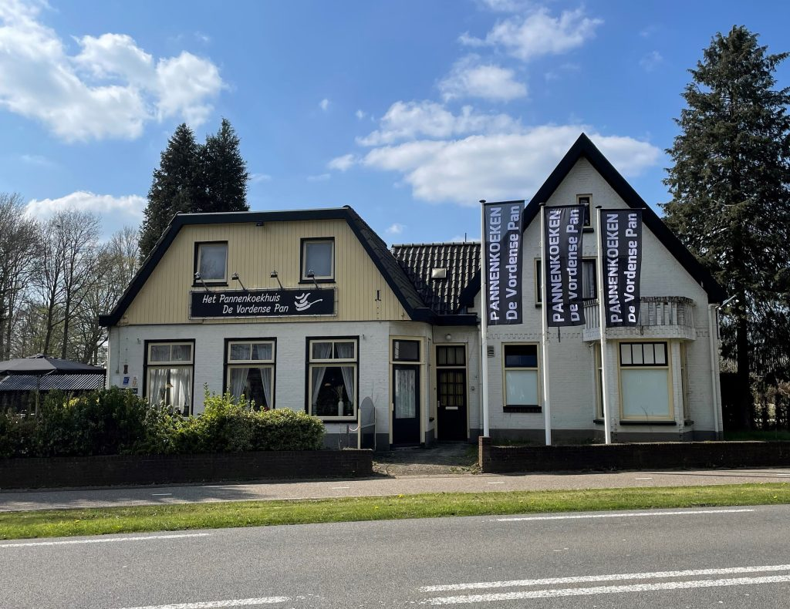
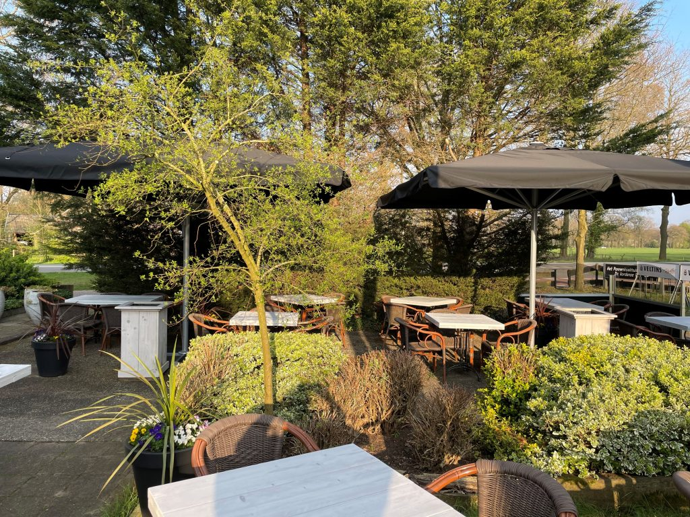
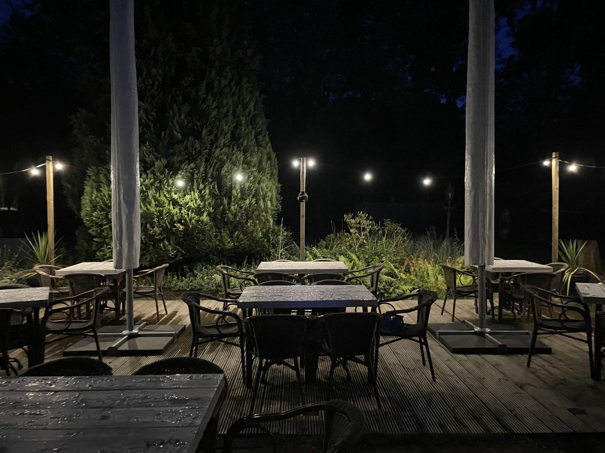

Openingsactie
Van 1 november tot 1 januari bakken wij elke pannenkoek met één ingrediënt voor maar € 9,95.
Uitgezonderd de specialiteitpannenkoeken en de ragouts.
Pannenkoekenhuis in Vorden
De lekkerste ambachtelijk gebakken pannenkoeken van de Achterhoek. Al ruim 25 jaar, voor jong en oud.
Woensdag tot en met zondag open van 12.00 tot 20.00 uur
Openingsactie tot 1 januari Elke pannenkoek met één ingrediënt voor € 9,95Van 1 november tot 1 januari bakken wij elke pannenkoek met één ingrediënt voor maar € 9,95.
Uitgezonderd de specialiteitpannenkoeken en de ragouts.
Onze kadobonnen en stempel-spaarkaarten zijn vernieuwd. De huidige kadobonnen kunt u nog tot 1 januari 2027 inleveren. Van de oude spaarkaarten zijn alleen de vanillekleurige stempelkaarten nog geldig.
Reserveert u kort van tevoren, dan kan het zijn dat uw online reservering niet goed verwerkt wordt. Bel ons dan even op 0575-554195.
Heerlijk, gezellig en informeel eten. Met z'n tweeën of met een groep, jong of oud, kleine of grote eter: u kunt altijd bij ons terecht.
Onze pannenkoeken worden ambachtelijk gebakken, geen machinepannenkoeken. We bakken met scharreleieren van de kippenboerderij Bouwmeester in Vorden en met meel van molenaar Bokkers Molle in Olst.
Volgt u een speciaal dieet? Wij bakken ook glutenvrij met biologisch boekweitmeel, op sojabasis, zoutloos, eivrij of op waterbasis. Laat het ons even weten.
Voor een lunch met een pannenkoek of een lunchgerecht, of gewoon voor een kopje koffie of thee met een gebakje: u bent van harte welkom.



Een kadobon van De Vordense Pan geeft u met een bedrag naar keuze, vanaf € 10,-.
Per € 15,- besteding krijgt u een stempel. Is de kaart vol? Dan krijgt u bij uw volgende bezoek een pannenkoek van ons.
De Vordense Pan ligt in het buitengebied van Vorden, direct aan de N316 Zutphen - Doetinchem, tussen weilanden, boerderijen en mooie dorpen. Ideaal om te wandelen, te fietsen of een toertocht met de auto te maken. Een bezoek is ook goed te combineren met het Achterhoekse klootschieten.
Deze fietsroute langs de kastelen van Vorden loopt ook langs ons pannenkoekenhuis. De achtkastelenroute wordt in Nederland al ruim honderd jaar gefietst. Wat veel mensen niet weten: er liggen eigenlijk negen kastelen in dit gebied. Kasteel Suideras wordt vaak vergeten, maar is zeker de moeite waard. De route wordt ook met de auto gereden; de routekaart is verkrijgbaar bij de VVV.
Volg de sporen van Berend van Hackfort, die echt geleefd heeft: hij werd rond 1475 in Vorden geboren. Onderweg ontdekken kinderen hoe het leven als kind in de riddertijd was. De route is ongeveer 20 km en kunt u bij de VVV of bij ons reserveren.
Eén van de opdrachten is bij ons in het restaurant: in onze verkleedkist vinden de kinderen kleren van stoere ridders en jonkvrouwen in lange jurken. De boeken over Berend zijn van schrijfster Martine Letterie en verkrijgbaar in de boekhandel.
Vorden ligt ongeveer halverwege het Pieterpad, van Pieterburen naar de Sint-Pietersberg. Het Trekvogelpad, van Bergen aan Zee naar Enschede, loopt van west naar oost direct langs ons restaurant. Een prima plek om tijdens of na de wandeling neer te strijken.
Van beide paden zijn gidsen met de etappes verkrijgbaar bij de boekhandel. U loopt langs statige landgoederen en buitenplaatsen, en een bezoek aan kasteel Vorden mag niet ontbreken. Vraag gerust naar het Pieterpad bij onze medewerkers.
Wilt u eropuit fietsen en daarna bij ons eten? Als lid van Vrienden op de Fiets zoekt u een logeerplek in de buurt van het pannenkoekhuis uit hun adressengids. Tip: op 100 meter van ons ligt de landelijke B&B Heerlijckheid 't Venhorst, waar de familie Kool u hartelijk ontvangt (0575-553576 of 06-15115362).
Na ruim 25 jaar zijn we een begrip in de Achterhoek. Voor onze keuken zoeken we nieuwe medewerkers, fulltime of parttime.
Bel ons en vraag naar Pamela.
0575 - 554195Vanaf 1 november 2026
| Maandag | gesloten |
|---|---|
| Dinsdag | gesloten |
| Woensdag | 12.00 - 20.00 |
| Donderdag | 12.00 - 20.00 |
| Vrijdag | 12.00 - 20.00 |
| Zaterdag | 12.00 - 20.00 |
| Zondag | 12.00 - 20.00 |
De keuken is open vanaf 12.30 uur. Voorlopig rusten wij op maandag en dinsdag. Feestdagen: zie Nu bij de Pan.
Reserveren kan telefonisch, per e-mail of via onze socials.
0575 - 554195
info@vordensepan.nl
Hengeloseweg 14
7251 PE Vorden
aan de N316 Vorden - Doetinchem